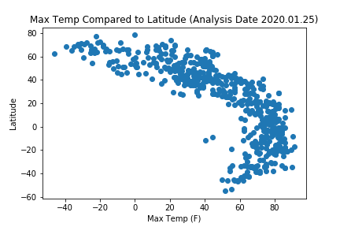
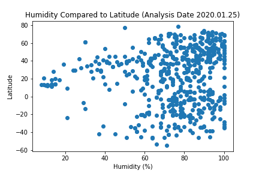
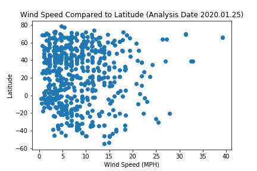
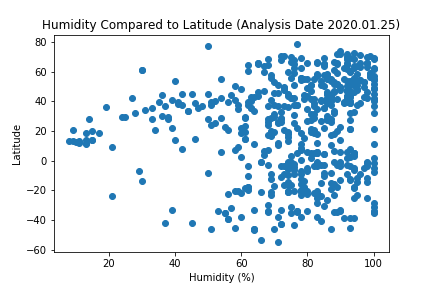
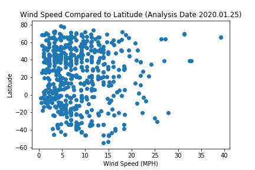

Summary: Latitude vs Meteorological Conditions
The purpose of this project is to analyze how weather changes as you get closer
to the equator. To accomplish this, data from over 500 cities was pulled from
OpenWeatherMap API.
After assembling the data, Matplotlib was used to plot various aspects of the
weather vs. the latitude. Factors that were looked at are: temperature, cloudiness,
wind speed, and humidity. This site provides the source data and cisualizations
created as part of the analysis, as well as explainations of the trends and correlations
observed.
Visualizations
 


